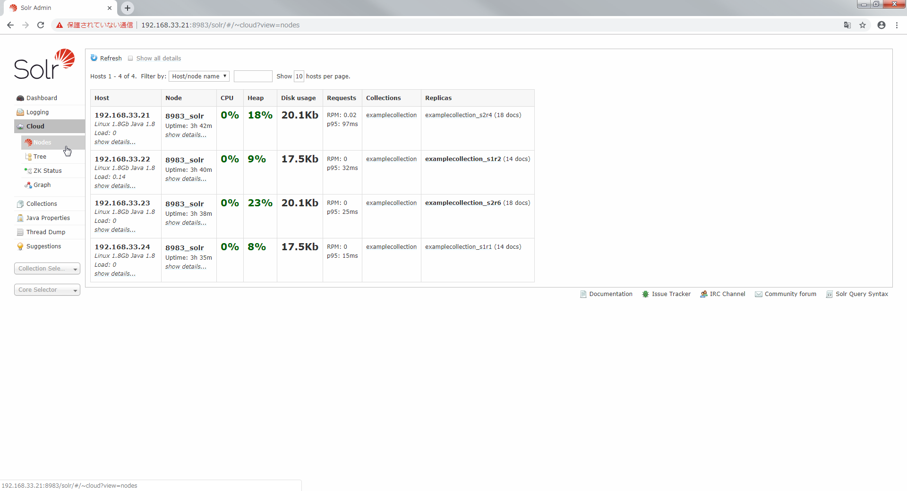
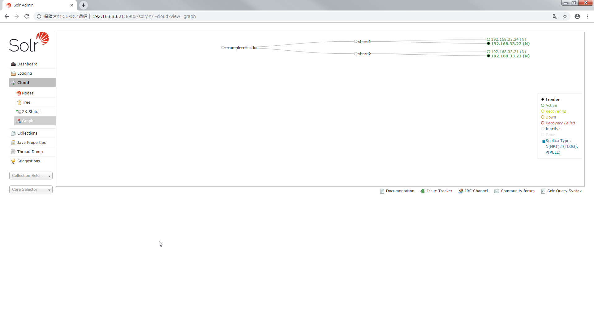
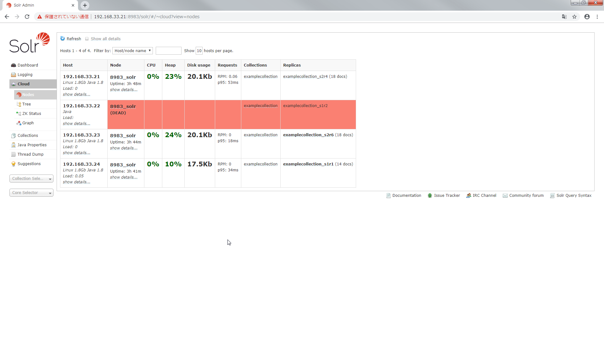
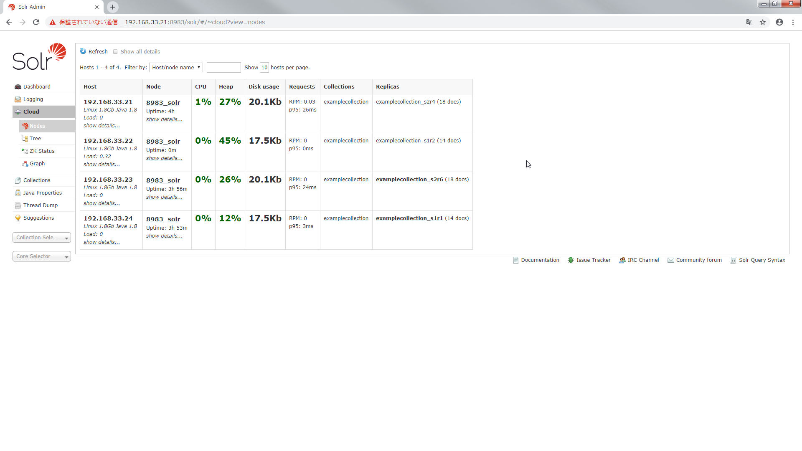
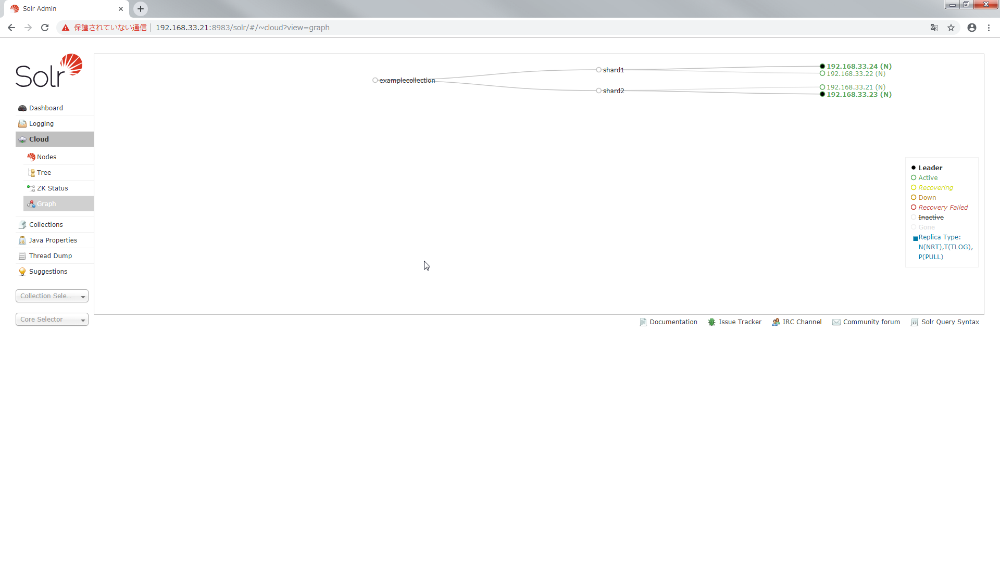
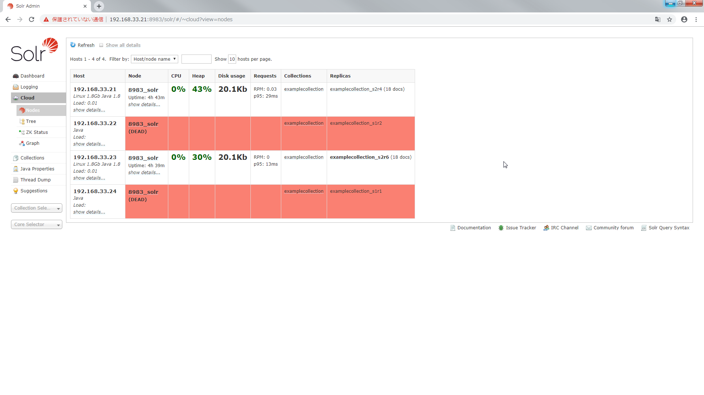
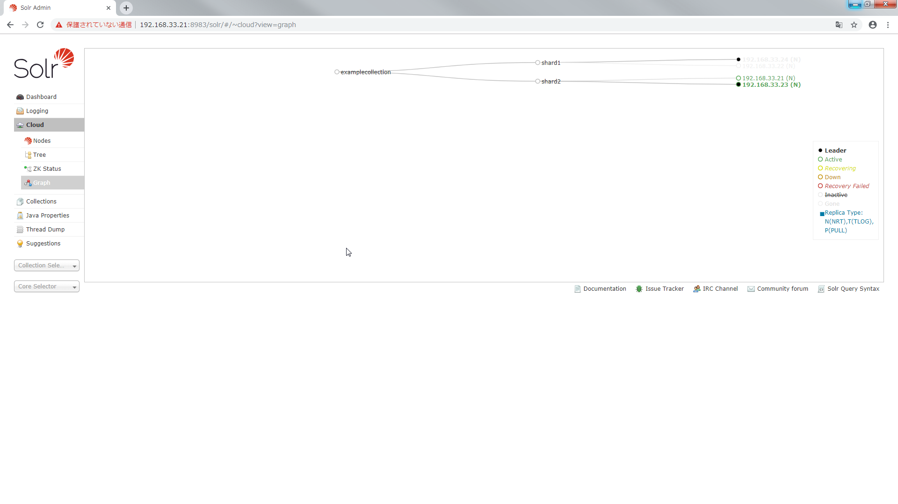
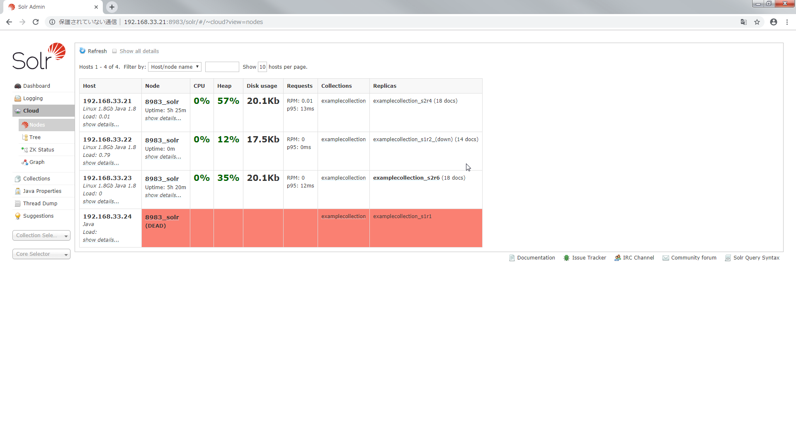
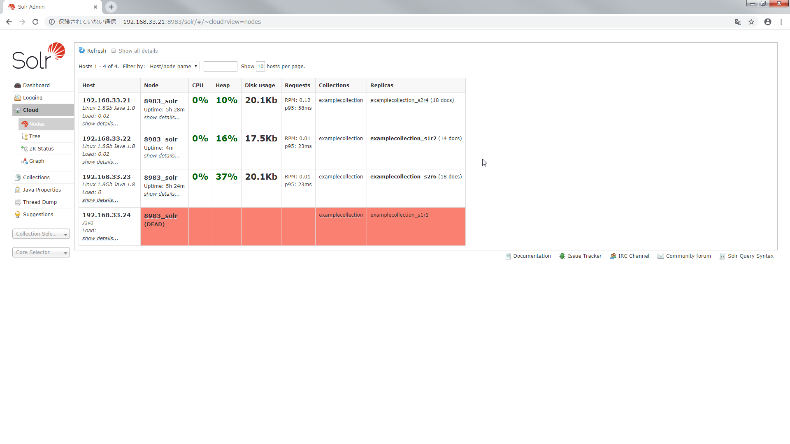

Solr Cloud の可用性を検証する
Solr Cloud の可用性を検証しました．
node の管理
node が停止したら Failover するか，node が再起動したら Failback するか実験しました．
1個の node を停止する
全ての node が起動しているときの node 一覧とグラフです．


これらの node で shard1 の leader を停止してみます．
vagrant halt node2
node 一覧を見ると shard1 の leader が死んだことがすぐわかります．

グラフを見ると shard1 の leader が 192.168.33.22 -> 192.168.33.24 になりました．
このように node が停止したら自動で leader が切り替わることがわかりました．
1個の node を復旧する
こんどは停止した node を起動します． また Cloud モードで起動します．
vagrant up node2
vagrant ssh node2 -c "sudo -u solr /opt/solr/bin/solr stop"
vagrant ssh node2 -c "sudo -u solr /opt/solr/bin/solr start -cloud -s /var/solr/data -p 8983 -z 192.168.33.11:2181,192.168.33.12:2181,192.168.33.13:2181 -h 192.168.33.22"
node 一覧を見ると shard1 の node が復活したことがすぐわかります．

グラフを見ると node が shard1 に復帰しました．

このように node が再起動したら自動で Solr Cloud に復帰し，shard に割り当てられることがわかりました．
shard の管理
先ほどの例では 1個の node を消しました． 今度は 1個の shard を消したらどうなるか実験します．
1個の shard を停止する
現状の node 一覧とグラフです．
shard1 の node を全てを停止してみます．
vagrant halt node2
vagrant halt node4
shard1 が死んでますね． shard2 の node が shard1 の node になるなんてことは起こりませんでした．


この状態で検索すると shard1 がありませんと怒られます．
$ curl -X GET "http://192.168.33.21:8983/solr/examplecollection/select?q=*:*&fl=id&sort=id%20asc&wt=json&indent=on" --noproxy 192.168.33.21
{
"responseHeader":{
"status":503,
"QTime":0,
"params":{
"q":"*:*",
"indent":"on",
"fl":"id",
"sort":"id asc",
"wt":"json"}},
"error":{
"metadata":[
"error-class","org.apache.solr.common.SolrException",
"root-error-class","org.apache.solr.common.SolrException"],
"msg":"no servers hosting shard: shard1",
"code":503}}
shard が死ぬと検索にも影響を及ぼすことがわかりました．
shard を復旧する
先ほどのままではよろしくないので復旧します． 停止している shard に属する node を起動します． また Cloud モードで起動します．
vagrant up node2
vagrant ssh node2 -c "sudo -u solr /opt/solr/bin/solr stop"
vagrant ssh node2 -c "sudo -u solr /opt/solr/bin/solr restart -cloud -s /var/solr/data -p 8983 -z 192.168.33.11:2181,192.168.33.12:2181,192.168.33.13:2181 -h 192.168.33.22"
node 一覧を見ると shard1 の node が復活しましたが down と表示されています．

グラフを見ても shard1 の node が down しています．
この状態で検索しても shard1 がないと怒られてしまいます．
$ curl -X GET "http://192.168.33.21:8983/solr/examplecollection/select?q=*:*&fl=id&sort=id%20asc&wt=json&indent=on" --noproxy 192.168.33.21
{
"responseHeader":{
"status":503,
"QTime":0,
"params":{
"q":"*:*",
"indent":"on",
"fl":"id",
"sort":"id asc",
"wt":"json"}},
"error":{
"metadata":[
"error-class","org.apache.solr.common.SolrException",
"root-error-class","org.apache.solr.common.SolrException"],
"msg":"no servers hosting shard: shard1",
"code":503}}
ですがしばらく待つと node が生き返ります．

検索すると全件取得できました．
$ curl -X GET "http://192.168.33.21:8983/solr/examplecollection/select?q=*:*&fl=id&sort=id%20asc&wt=json&indent=on" --noproxy 192.168.33.21
{
"responseHeader":{
"zkConnected":true,
"status":0,
"QTime":108,
"params":{
"q":"*:*",
"indent":"on",
"fl":"id",
"sort":"id asc",
"wt":"json"}},
"response":{"numFound":32,"start":0,"docs":[
{
"id":"0579B002"},
{
"id":"100-435805"},
{
"id":"3007WFP"},
{
"id":"6H500F0"},
{
"id":"9885A004"},
{
"id":"EN7800GTX/2DHTV/256M"},
{
"id":"EUR"},
{
"id":"F8V7067-APL-KIT"},
{
"id":"GB18030TEST"},
{
"id":"GBP"}]
}}
まとめ
- node が停止したら自動で leader が切り替わります．
- node が再起動したら自動で Solr Cloud に復帰し，shard に割り当てられます．
- shard に属する node が全て停止したら shard は機能しなくなり検索にも影響が出ます．
- node が全停止した shard で node が復旧すると最初は dead 状態だがしばらくすると復旧し検索できるようになります．